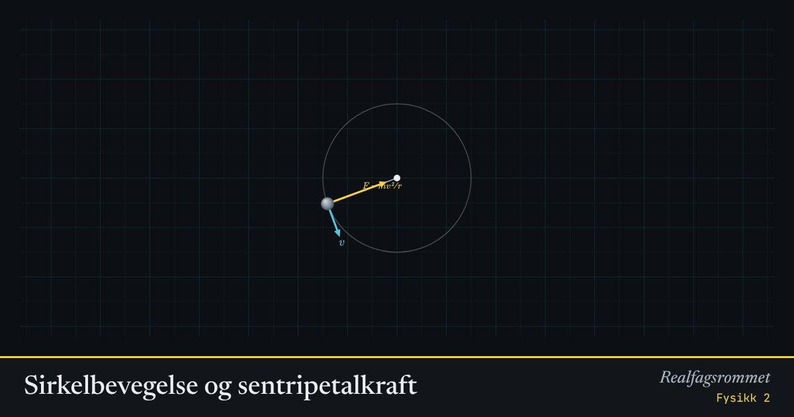

Sirkelbevegelse og sentripetalkraft
For å gå i sirkel må noe hele tiden trekke legemet inn mot sentrum. Uten den kraften fortsetter legemet rett fram langs tangenten.
Start animasjonen
Formler
Om animasjonen
Farten (blå) peker langs banen. Akselerasjonen og kraftsummen (gul) peker inn mot sentrum. Kraften endrer retningen på farten, ikke størrelsen.
Kutt snora og se: steinen flyr rett fram langs tangenten, ikke utover fra sentrum. Det finnes ingen «sentrifugalkraft» som dytter den ut.
I loopen er det tyngdekraften og normalkraften fra skinnene som sammen gir kraftsummen inn mot sentrum. På toppen må farten være minst , ellers faller vogna.
Prøv dette
- Hva skjer med kraften når farten dobles? Når radien dobles?
- Regn ut minste fart på toppen av en loop med radius 8 m.
- Vis at vogna må ha minst i bunnen for å klare loopen (uten friksjon). Test det.
- Hvorfor kjenner du deg tyngre i bunnen av en loop?
Kompetansemål
- Fysikk 2: Krumlinjet bevegelse og sentripetalkraft
Mer om bevegelse og krefter
- Rettlinjet bevegelse: posisjon, fart og akselerasjon
- Krefter på skråplan: Newtons lover
- Friksjon: hvilefriksjon og glidefriksjon
- Newtons 2. lov for sammensatte systemer
- Hva viser vekta i heisen?
- Fall med luftmotstand: Eulers metode
- Strikkhopp: en numerisk modell
- Støt og bevegelsesmengde
- Ballistisk pendel: bevegelsesmengde og energi
- Skrått kast
- Planetbaner i et gravitasjonsfelt